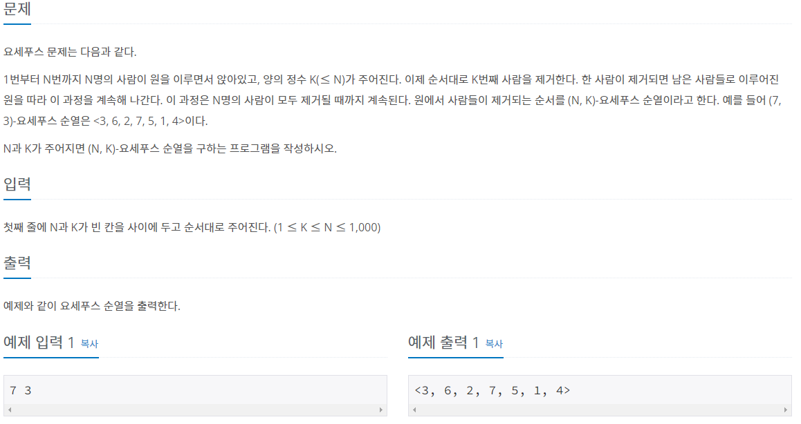
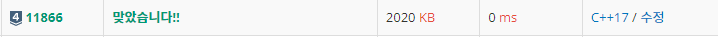

#INFO
난이도 : SIVLER4
알고리즘 유형 : DataStructure_QUEUE
출처 : 11866번: 요세푸스 문제 0 (acmicpc.net)
11866번: 요세푸스 문제 0
첫째 줄에 N과 K가 빈 칸을 사이에 두고 순서대로 주어진다. (1 ≤ K ≤ N ≤ 1,000)
www.acmicpc.net

#SOLVE
큐 자료구조를 이용하면 간단하게 풀이 가능한 문제 였습니다. 입력받은 N까지의 수를 QUEUE 에 PUSH한 뒤, K번째 사람이면 pop을 하고 K번째 사람이 아니라면 pop 한 뒤, 다시 뒤에서 push 해 줍니다.
while(!q.empty()) {
if (cnt % K == 0) {
int ans = q.front();
q.pop();
if (q.empty()) { cout << ans << ">"; }
else { cout << ans << ", ";}
}
else {
int tmp = q.front();
q.pop();
q.push(tmp);
}
cnt++;
}#CODE
#include <iostream>
#include <queue>
using namespace std;
int main(int argc, char* argv[]){
int N, K;
cin >> N >> K;
queue<int> q;
for (int i = 1 ; i <= N; i++) {
q.push(i);
}
cout << "<";
int cnt = 1;
while(!q.empty()) {
if (cnt % K == 0) {
int ans = q.front();
q.pop();
if (q.empty()) { cout << ans << ">"; }
else { cout << ans << ", ";}
}
else {
int tmp = q.front();
q.pop();
q.push(tmp);
}
cnt++;
}
return 0;
}